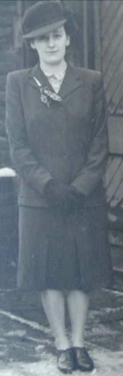
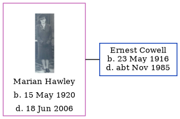

Marian Lowe Cowell (née Hawley) 1920 - 2006
[ Home ] | [ Calendar ] | [ Surnames Index ] | [ Errors ] | [ Family History ]Marian Hawley, the wife of Ernest James Cowell (the first cousin once-removed on the mother's side of Nigel Horne), was born in Oldham, Lancashire, England on 15 May 19201,2. She married Ernest (a transport driver) in Middleton, Lancashire, England around Aug 19484.
She died in Oldham on 18 Jun 20062,3.
Citations
- England & Wales births 1837-2006 - Findmypast
- England & Wales deaths 1837-2007 - Findmypast
- England & Wales Government Probate Death Index 1858-2019 - Findmypast
- England & Wales Marriages 1837-2005 - Findmypast
Media
Marion Hawley

England & Wales deaths 1837-2007 - BMD/D/2006/6/87025726
England & Wales marriages 1837-2005 - BMD/M/1948/3/AO/000780/077
England & Wales births 1837-2006 - BMD/B/1920/2/AZ/000760/136
England & Wales Government Probate Death Index 1858-2019 - GBOR/GOVPROBATE/B/2005-2006/00092438
Family Tree
Map
Generated by ged2site. Last updated on Jul 3, 2024
Known Issues
No records of living with anyone
1939 UK register information missing